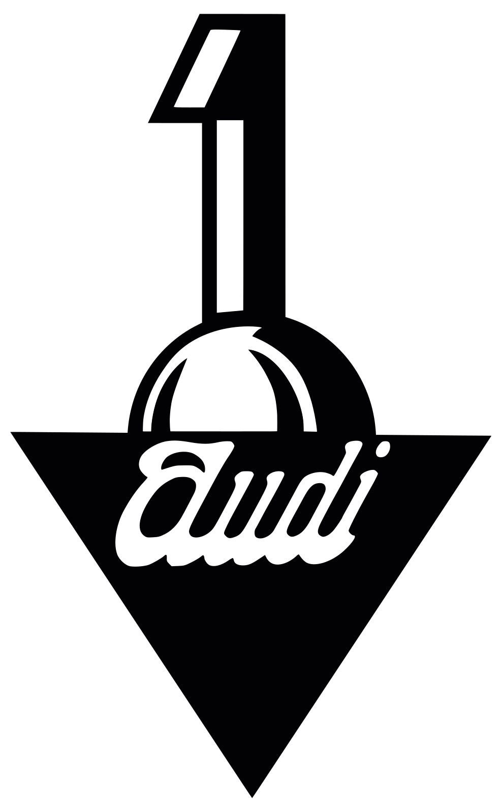
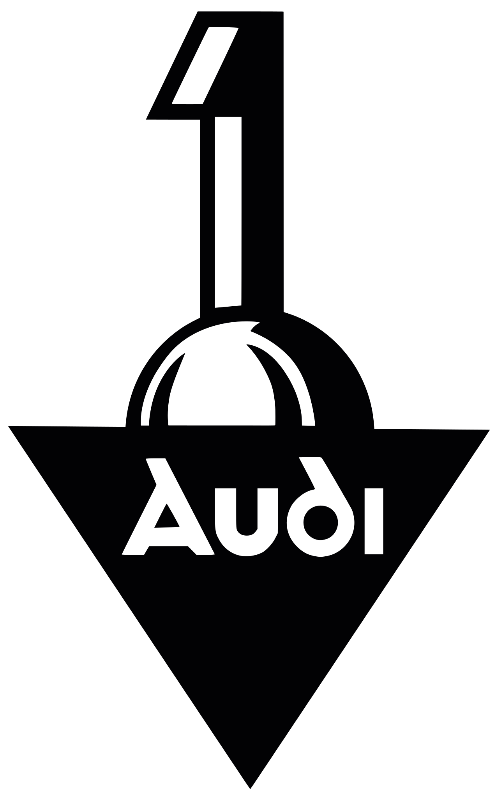
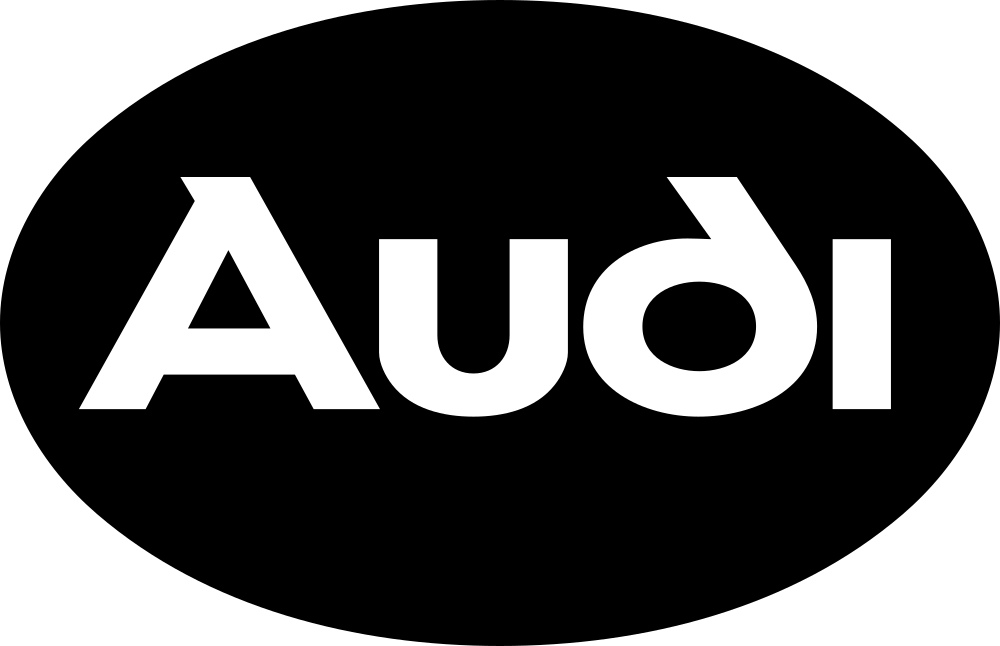
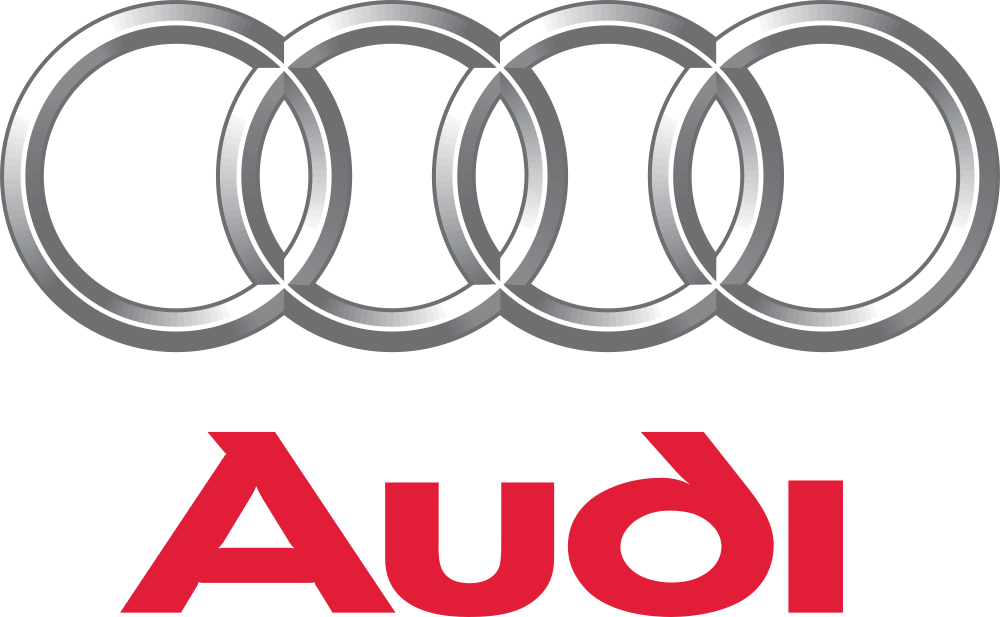

아우디 Audi
아우디(Audi)는 독일 잉골슈타트에 본사를 둔 폭스바겐 그룹 산하 프리미엄 자동차 제조사이다.
최종 업데이트

아우디는 어떤 브랜드인가
아우디(Audi)는 독일 잉골슈타트에 본사를 둔 폭스바겐그룹 산하 프리미엄 자동차 브랜드다. 1909년 엔지니어 아우구스트 호르히가 설립하고 1910년 아우디 상호를 갖춘 회사가 뿌리이며, 1932년 네 회사가 아우토우니온으로 결합하면서 네 개의 맞물린 링 엠블럼이 탄생했다.
2024년 전 세계에 약 167만 대를 인도하고 매출 645억 유로 규모를 기록한 글로벌 고급차 제조사다.
아우디는 어떻게 봐야 할까
메르세데스-벤츠, BMW와 함께 독일 프리미엄 삼강으로 묶이지만, 아우디의 차별점은 1980년 콰트로(quattro) 상시 사륜구동으로 쌓은 기술 이미지와 '기술을 통한 진보(Vorsprung durch Technik)' 철학이다. e-트론 라인업으로 전동화를 앞세웠으나, 2024년 인도량이 11.8% 줄어든 약 167만 대에 그치고 독일에서 2029년까지 7,500여 명 감원을 발표하며 전기차 전환 속도와 수익성 사이에서 전략을 재조정 중이다.
될너 CEO는 내연기관 모델 존속 가능성까지 열어 두며 유연한 노선으로 선회했다. 한국에서도 2024년 판매가 큰 폭으로 줄어 수입차 상위권에서 밀렸다가 다수의 신차 공세로 회복을 노린다.
아우디는 어떻게 시작되고 성장했나
창업자는 독일 엔지니어 아우구스트 호르히다. 그는 자신이 세운 호르히 사를 떠난 뒤 1909년 새 자동차 회사를 세웠으나, 호르히 상호를 쓸 수 없어 '듣다'라는 뜻의 독일어 호르히를 라틴어로 옮긴 '아우디(Audi)'를 1910년 사명으로 채택했다.
1932년 6월, 대공황 속에서 아우디·데카베(DKW)·호르히·반더러 네 회사가 아우토우니온으로 합병했고, 이 결합을 상징해 네 개의 맞물린 링이 엠블럼이 되었다. 호르히 본인은 합병 후 신설사 감독이사회에 참여해 기술 자문을 이어갔다.
이후 1960년대 폭스바겐이 아우토우니온을 인수하면서 오늘의 폭스바겐그룹 체제로 편입됐다.
아우디의 브랜드 아이덴티티는 무엇인가
아우디의 정체성은 네 개의 맞물린 링과 '기술을 통한 진보'라는 신조에 응축된다. 1932년 네 창업사를 상징한 이 링은 1980년대 프리미엄 시장 진출과 함께 은빛 입체 마크로 다듬어졌고, 2016년 평면형으로 단순화됐다.
1971년 도입된 'Vorsprung durch Technik' 슬로건은 혁신과 정교한 엔지니어링을 약속하는 브랜드 보이스로 작동한다. 진보적 기술과 절제된 디자인을 중시하는 도심형 고소득 소비자를 겨냥하며, 차갑고 정밀한 톤으로 소통한다.
아우디의 대표 제품과 서비스는 무엇인가
제품군은 세단·왜건의 A 시리즈(A4·A6 등), SUV의 Q 시리즈(Q5·Q7 등), 순수 전기차 e-트론(Q6 e-트론·A6 e-트론 등), 고성능 RS·S 라인으로 구성된다. 가격대는 엔트리 세단·SUV의 수천만 원대부터 고성능 RS와 대형 전기 SUV의 억대까지 폭넓다.
판매는 공식 수입원과 전국 전시장·서비스센터 네트워크를 통한 딜러 유통 방식을 따른다.
아우디는 지금 어떤 상태인가
본사는 독일 바이에른주 잉골슈타트에 있으며, 모회사는 폭스바겐그룹이다. 최고경영자(CEO)는 게르노트 될너(Gernot Döllner)다.
2024년 전 세계 인도량은 약 167만 대로 전년 대비 11.8% 감소했고, 그중 순수 전기차는 16만여 대였다. 같은 해 아우디그룹 매출은 645억 유로, 영업이익은 39억 유로 규모였다.
한국 시장 판매량은 2024년 약 9천 대 수준이었다.
아우디 연혁 — 주요 사건은 언제였나
아우디 로고는 어떻게 변해왔나
대표 로고대표 브랜드 마크
BI/CI 아카이브보관 이미지 1
BI/CI 아카이브 2보관 이미지 2
BI/CI 아카이브 3보관 이미지 3
BI/CI 아카이브 4보관 이미지 4자주 묻는 질문
아우디는 어느 나라 브랜드인가요?
아우디는 독일의 모빌리티 브랜드입니다.
아우디는 언제 설립되었나요?
아우디는 1909년 설립되었습니다.
아우디의 브랜드 아이덴티티는 무엇인가요?
아우디의 정체성은 네 개의 맞물린 링과 '기술을 통한 진보'라는 신조에 응축된다.
아우디의 대표 제품은 무엇인가요?
제품군은 세단·왜건의 A 시리즈(A4·A6 등), SUV의 Q 시리즈(Q5·Q7 등), 순수 전기차 e-트론(Q6 e-트론·A6 e-트론 등), 고성능 RS·S 라인으로 구성된다.
아우디의 본사는 어디에 있나요?
본사는 독일 바이에른주 잉골슈타트에 있으며, 모회사는 폭스바겐그룹이다.
아우디의 창업자는 누구인가요?
아우디의 창업자는 아우구스트 호르히입니다(위키데이터 기준).
아우디의 모기업은 어디인가요?
아우디의 모기업은 폭스바겐 AG입니다(위키데이터 기준).
출처와 검증
아우디 관련 참고: 공식 웹사이트 · 위키데이터 Q23317 · 한국어 위키백과 · 영어 위키백과. 브랜드명은 한글과 원어를 함께 표기하되 데이터에 없는 표기는 만들지 않습니다. 기원 국가·설립연도는 검수된 정의문에서 확인된 값을 우선하고, 없을 때만 공식 웹사이트 URL이 일치하는 위키데이터 개체의 값을 씁니다. 위키데이터 값은 2026-09-07 기준입니다.